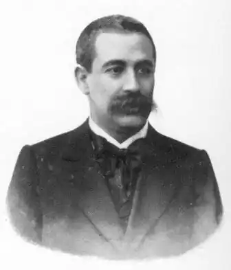
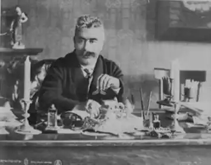

Перець Іцхок Лейбуш
[1851-1915] — єврейський поет, новеліст, драматург і публіцист.
Народився в Замостя Люблінської губ. Отримав традиційне релігійне виховання. З ранньої юності захоплювався єврейським просвітництвом ( "Гаскала"), знайомився з європейською літературою, особливо з Берні і Гейне, вплив яких гостро відчувалося в його поезії і публіцистиці. Дебютував в 1875 віршами на гебраістском яз. в журн. "Hasachar". У 1886 опублікував в гебраістском зб. "Haasif" першу серію новел і поему "Сучасні мотиви" (Minginojs-hasman), де він виступав на захист єврейського яз. (Idis). У 1888 надрукував свою першу велику поему на єврейському яз. "Моnis" (Моніж), де він в кілька фантастичній формі показав процес подолання єврейським юнаків свого синагогальної-релігійного світовідчуття і прилучення до реального земного життя. Цей процес виявлений на тлі посилюється розпаду старого патріархального побуту. П. увійшов в літературу в період ліквідації пережитків феодалізму і загострення боротьби між робочим класом і капіталізмом в порівняно розвиненою в індустріальному відношенні Польщі. Своєрідність цих процесів в єврейському середовищі, виражене в світогляді радикальної націоналістичної дрібнобуржуазної інтелігенції, визначало творчий шлях П. В його творчості отримала яскраве вираження вся суперечливість еволюції цієї інтелігенції, що відображала повну протиріч дійсність єврейської дрібної буржуазії на шляху від патріархального укладу до капіталізму, а тим більше в складних умовах розорення єврейської дрібної буржуазії під напором розвивалося капіталізму, зростання єврейського робітничого руху, революци 1905 і що послідувала за нею столипінської реакції. Письменник-класик, що створив особливу літературний напрям, що поєднувало реалізм з романтизмом, різко відрізнялося від напрямку інших класиків єврейської літератури (в 80-х рр.) — Менделе Мойхер-Сфорім і Шолом-Алейхем, — П. протягом усього свого літературного шляху був не тільки поет і белетрист, а й активний громадський працівник, вихователь літературного покоління. Кожен етап його громадської діяльності був найтіснішим чином пов'язаний з відповідним етапом його творчого шляху. Віддавши данину в юності просвітницької боротьбі проти пережитків єврейського середньовіччя і общинних заправив, П. дуже скоро усвідомив необхідність боротьби за ті чи інші форми існування в умовах капіталізму. В кінці 80-х і на початку 90-х рр. домінуючим початком в його творчості був мотив краху під впливом капіталізму патріархальних відносин і цілісного синагогальної-релігійної свідомості. Крім згаданої вже поеми "Monis" цей мотив отримав свій розвиток в ряді творів П. Поема "Візник", пофарбована романтичною тугою за минулим, по суті реалістично оповідає? тому, як розвивається капіталізм знищує старі господарські відносини: залізниця, позбавивши єврейські містечка старих джерел доходу, тим самим підірвала старий побут. У першій серії новел письменника виявлено криза свідомості ешіботской молоді, долучитися до просвіти ( "Венера і Суламіф", "Янкель-песиміст" і ін.). Цим мотивами також присвячений ряд "Нарисів подорожі по провінції", які стали результатом участі П. в експедиції по обстеженню стану збіднілого і розореного єврейського містечка. Торжество капіталізму стало джерелом розорення дрібнобуржуазних мас. Цей процес Перець відбив у своїй художній творчості і частково в своїй публіцистичній діяльності. З 1891 він видавав разом з Я. Дінезонрм зб. "Єврейська бібліотека" (Di idise bibliotek). Просвіта, спрямоване проти пережитків середньовіччя, тут поступилося місцем радикально-буржуазному просвіти на базі капіталізму. Однак тривав процес пауперизації мас, з одного боку, і зростання робітничого руху — з іншого, допомагали П. усвідомлювати безпідставність свого радикального просвітництва на даному етапі. У центрі його уваги стають робочі маси. У 1894-1896 він разом з Д. Пінським і М. Спектором видавав серію адресованих вже гл. чином до єврейських робітників так зв. "Святкових листків" (Jontev bletlaeh), надзвичайно популярних в ті роки серед єврейських робітників і зіграли на першому етапі розвитку єврейського робітничого руху значну агітаційну роль. В середині 90-х рр. П. створив значну серію соціально загострених оповідань і поем, де мотиви соціальної знедоленості ( "У підвалі", "Посильний", "Бонця-мовчун" і ін.) І антиклерикальної викриття ( "Der streimel") переростали в мотиви ще неоформівшегося стихійно революційного протесту [ "Мораль" (Muser), поеми "У чужого вінчального плаття", "Три швачки", що стали популярними піснями серед єврейських робітниць, і інші]. Однак, незважаючи на те що просветительски-публіцистична діяльність П. тієї епохи, як і його соціально загострені розповіді і поеми об'єктивно грали в ті роки позитивну роль у справі освіти єврейських робочих мас, П. в них по суті відбив далеко не пролетарський протест, а лише соціальне невдоволення радикальної дрібнобуржуазної єврейської інтелігенції в умовах наростання революційної хвилі і наближення революції 1905. З середини 90-х рр. в поезії П. поряд з соціальними мотивами активізувалися інтимні і національно-релігійні мотиви, а в його прозі почали домінувати "хасидские мотиви" і мотиви ідеалізованого національно-релігійного минулого. В області розробки соціальних тим Перець лише трохи піднімався над ідейним рівнем народницьких просвітницьких дрібнобуржуазних письменників. Великої майстерності він досяг саме в своїх "хасидського новелах", опублікованих в 1897-1902 і потім в роки столипінської реакції, і в "Народних переказах" про жертовну героїки національно-релігійного минулого, перша серія яких написана в 1903-1904. Ці мотиви Перець продовжував культивувати і в роки реакції в формі символіко-містичних драм [ "На ланцюга" (In polis of der keit), "Золотий ланцюг" (Di goldene keit), "Ніч на старому ринку" (Banacht af dem altn mark , 1907-1913)]. У цих творах з особливою гостротою розкрилися коріння творчості Переца — ідеолога націоналістичної єврейської дрібної буржуазії — і вся суперечливість еволюції єврейської радикально налаштованої націоналістичної дрібнобуржуазної інтелігенції. Якщо в 40-60-х рр. єврейські просвітителі — Аксенфельда, частково Менделя Мойхер-Сфорім і особливо І. Липецький — розробляли хасидские мотиви в плані викривальних, то П. відштовхувався від їх викривальних-сатиричної спрямованості, — він створив художньо-значну реалістичну новелу, яка містить об'єктивістські реалістичні замальовки старого релігійного хасидського побуту [ "Хельмскую меламед" (Der chelmer melamed), "Сімейний світ" (Solem-bais), "He дарма кажуть:" божевільний "" (M sagt: "mesuge" — gloib), "божевільний нехлюй" (Der mesugener batlen) і ін.]. Але цей об'єктивізм з самого початку базувався на протиставленні релігійно-етично поглибленої минулого патріархального життя аморальності і душевної порожнечі сучасного буржуа, торгаша або обслуговуючої його буржуазної інтелігенції. Етичну ідейну деградацію буржуа, його душевну порожнечу він викривав через звеличення національно-релігійної свідомості в минулому ( "Чотири покоління — чотири заповіту" — "Vir dojres — vir zawpes"; "Bсe менше і менше" — "Wos amol weiniker"). Так. обр. його реалистич., формально-об'єктивістський, по суті позитивний показ розпадається національно-релігійного побуту, твердження національно-релігійної свідомості були спрямовані, з одного боку, проти нігілізму просвітителів щодо національно-релігійного минулого, а з іншого боку, викривали буржуазна свідомість. Але це звернення до минулого як в. цілях ревізії буржуазних і дрібнобуржуазних просвітителів, які відіграли прогресивну роль, з одного боку, так і для викриття "аморального" капіталізму — з іншого, було з самого початку глибоко хибно. Плідна поглиблення поглядів просвітителів і критика капіталізму можливі були звичайно лише з позицій класу, що йде на зміну капіталізму, а не з позицій класу деградирующего. Не дивно, що Перець від реалістичної новели про распадающемся б ті переходив до символистического опоетізірованію релігійно-національного минулого. Його "Хасидські мотиви" і "Народні оповіді" вже до революції 1905 стали предметом наслідування цілого покоління дрібнобуржуазних націоналістичних письменників, а в роки реакції — прапором всієї націоналістичної буржуазної і дрібнобуржуазної інтелігенції, яка поспішила змінити віхи і відвернутися від революції. Апологетика національно-релігійного минулого в цих творах переростала в твердження обраності єврейського народу, його месіанізму, "духу Ізраїлю". У 1904-1906 П. продовжував бути близьким до революційного руху. Він читав лекції для робітників, намагався створити єврейський робітничий університет. І в роки реакції він неодноразово висловлював свої симпатії робітничого руху і соціалізму. Але все це було лише протиріччям дрібнобуржуазної дійсності, вираженням безсилля дрібнобуржуазного протесту проти капіталізму. Основне і провідне у творчості П. — індивідуалістичне бунтарство, дрібнобуржуазний гуманізм, свідомість національної обраності, націоналістична ідеалізація минулого. Якщо в драмі "На синагогальної ланцюга" (In polis af der keit) виявлено бунт прозрівшого демократичної особистості проти пережитків феодально-релігійного середньовіччя, якщо в ліричній драмі "Смерть музиканта" проголошено твердження епікуреїзму як протест проти релігійного аскетизму, то в драмі "Жив колись король "вже явно виражена скорботу вже неіснуючого в результаті страйкового руху дрібного єврейського підприємця. Якщо драма "Золотий ланцюг" ще проникнута апологетикою соціально-етичного бунту обраної особистості, котра протиставила широким масам, відданим буднях життя, то драма "Ніч на старому ринку" являє вже філософське твердження безвиході і песимізму. Шлях П. від реалістичної соціальної новели і поеми до містико-символічним легендам і драмам — шлях дрібнобуржуазної інтелігенції від радикального бунтарства напередодні революції і в самі роки першої революції до націоналістичної покірності перед буржуазною дійсністю в роки реакції. Ця еволюція П. у всій її суперечливості позначилася і в його публіцистичної діяльності в роки реакції — в діяльності, все більше проникають націоналістичними клерикальними тенденціями. П. зробив величезний вплив на єврейську літературу і всю єврейську культуру епохи імперіалізму. Виключно яскрава творча особистість, терзають усіма протиріччями радикальної націоналістичної інтелігенції поневолених націй епохи імперіалізму, П. продовжує бути об'єктом надзвичайно уважного, але глибоко критичного вивчення і освоєння в єврейській радянській літературі.